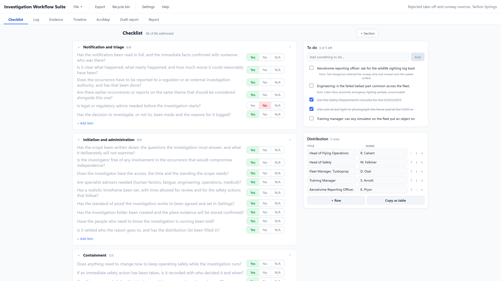
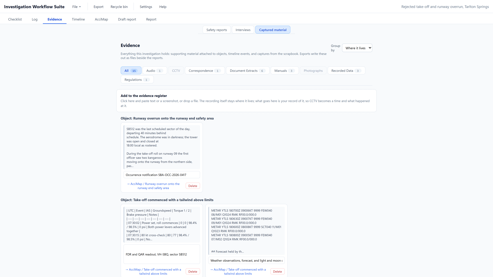
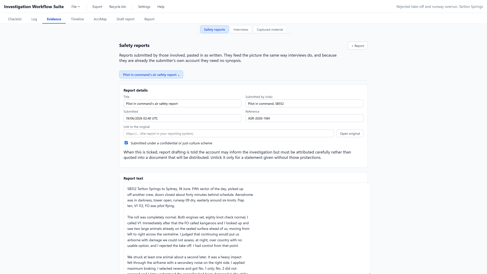
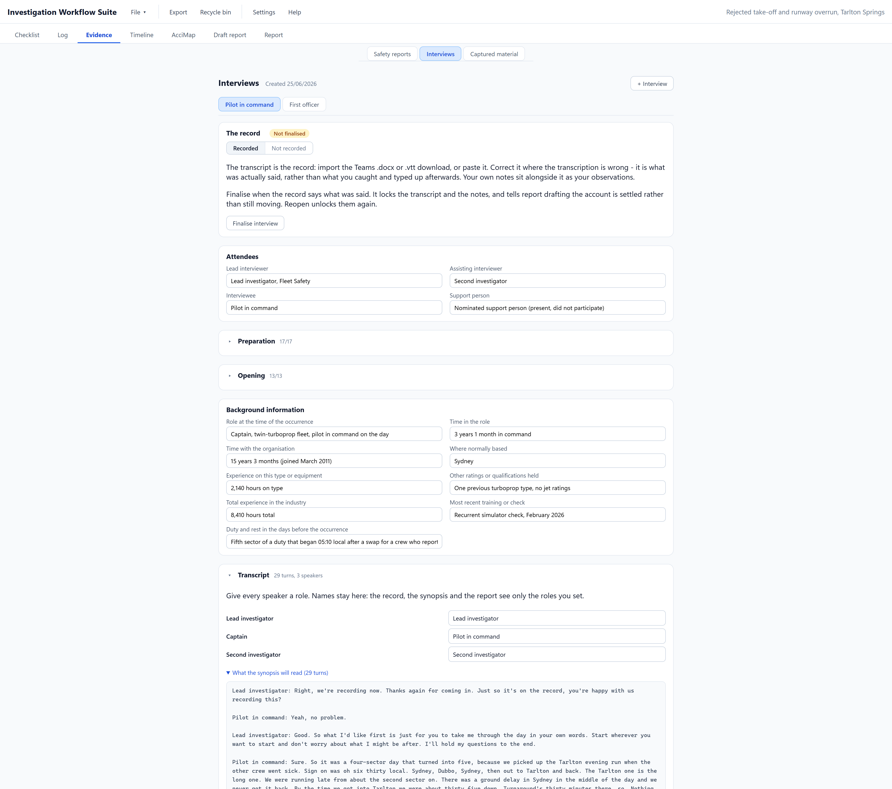
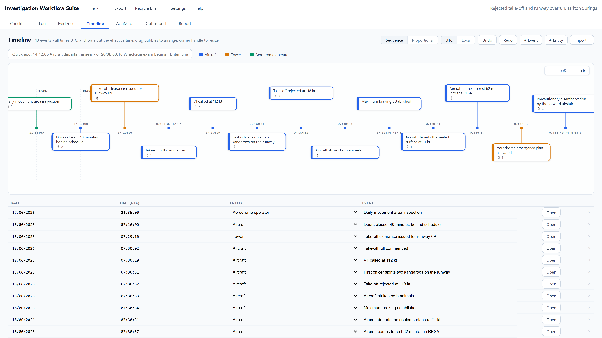
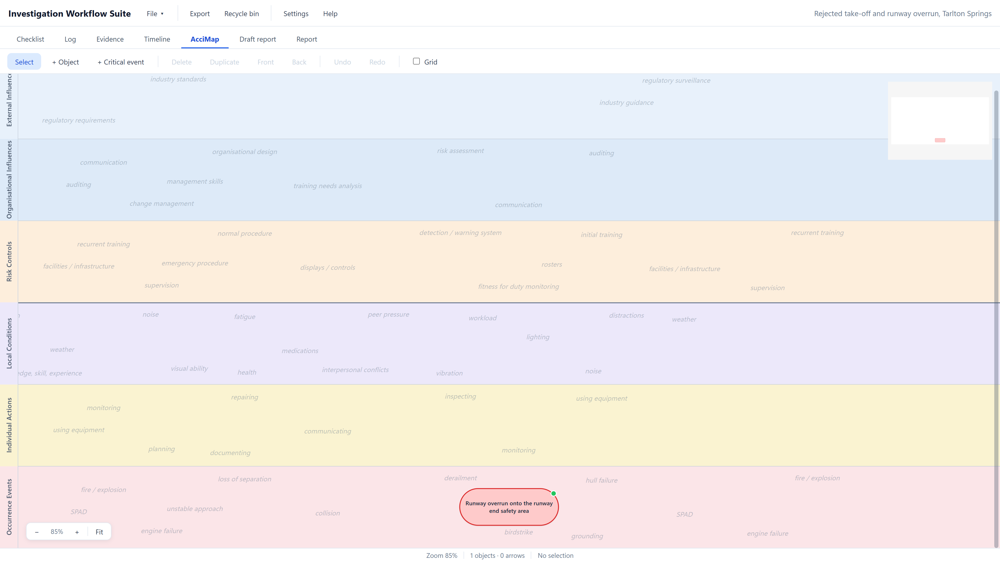
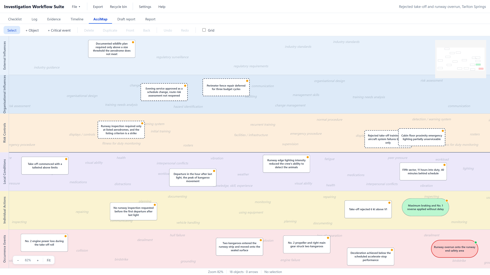
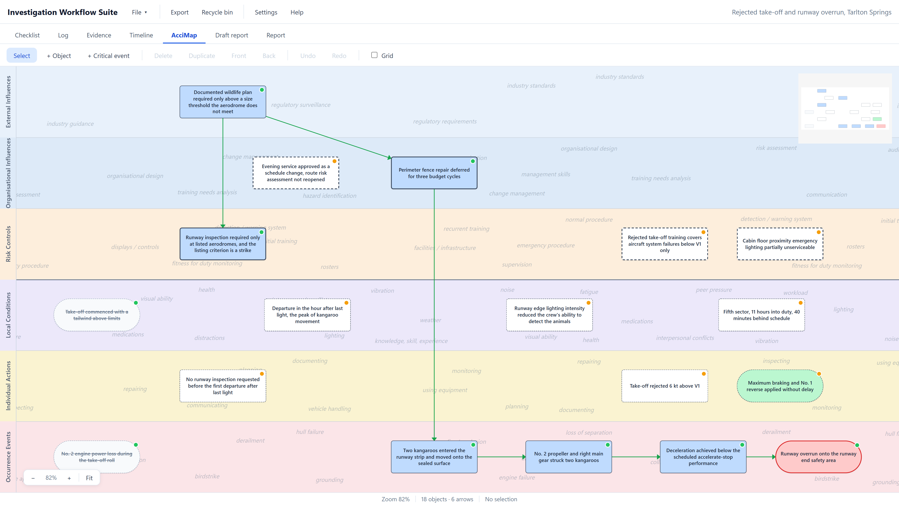

Notification and triage
Open the investigation and triage what came in
The notification arrives, the occurrence is risk rated, and the decision to investigate is made. File > New investigation creates a folder with the investigation file inside it, and the first checklist section is the one that covers notification, triage and the terms of reference.
The checklist runs from there through evidence gathering, interviews, analysis and reporting. Each item is answered yes, no or not applicable, and the tab shows how much is still open.
What the app recordsThe occurrence title, the checklist with every answer, and the distribution list the report will eventually go to.

Work the checklist, and keep one to-do list
Anything that needs chasing goes on a single list. A job raised while filling in an object's form appears here with a link back to that object, so the list can be read in one place and handed to a colleague.
The checklist is a template, not a fixed list. An investigator edits it in Settings to suit how they work; an organisation's own edition ships with its own, so every investigation starts from the same standard.
What the app recordsEvery to-do with its source, and which checklist items are still open.
Collecting the evidence
File every piece of material once
Screenshots, extracts and documents go into one register with a caption, its significance, a category and a reference. Each item is linked to whatever rests on it, so when a source turns out to be unreliable it is clear what has to be revisited.
What the app recordsThe capture itself inside the investigation file, why it matters, and every object, interview or finding that depends on it.

Take in the safety reports as they were written
The reports submitted by the people involved are pasted in as written, with who submitted them by role, when, and the reference in the reporting system. They feed the picture the same way an interview does.
One tick says the report came in under a confidential or just-culture scheme. From then on drafting is told the account may inform the investigation but must not be quoted into a document that will be distributed.
What the app recordsThe account verbatim, its reference and time, the submitter's role, and the protection it was given.

Turn the interviews into settled records
Import the Teams transcript, as the .docx or .vtt download, or paste it; correct what the transcription got wrong; add your notes; finalise. From then on the account is settled and report drafting treats it that way.
De-identification is built in. Each speaker in a transcript is mapped to a role, and it is the role, never the name, that reaches the record, the collation, or any drafting model.
What the app recordsThe corrected transcript, the role for every speaker, the investigator's notes beside it, and whether the account has been finalised.

Build the sequence of events
Each event carries its source and its time basis, so the sequence can be defended when two records disagree about when something happened. The timeline exports as an image beside the report.
What the app recordsThe ordered events, the evidence behind each one, the time basis it rests on, and which event is the critical one.

Building the causal map
Place the critical event
The occurrence goes in the bottom lane, with what happened and the proof of its significance recorded. Everything else on the map exists to explain this one object.
What the app recordsThe critical event as an object, in its lane, at its point in time.

Put every hypothesis on the map
An object for every event or condition that might have played a part, in the lane it belongs to and roughly where it sits in time. Nothing is filtered at this point: the method works by testing, not by intuition, and a hypothesis that is later excluded still strengthens the record.
What the app recordsEach hypothesis as an untested object, shown with a dashed white border until someone has tested it.

Adjust the map live as the evidence comes in
An investigation does not arrive in order. A transcript changes what a factor means, a record arrives that closes a line of enquiry, a new hypothesis appears in week three. Objects are moved, tested, connected and reconnected as that happens, and the map is never more than the current state of the evidence.
Every arrow is a claim that one thing led to another. It stays grey until the object it comes from has passed its tests, and turns green when it has, so the picture builds itself as the work is done.
What the app recordsEvery object and every connection, with the state of each test behind them.
